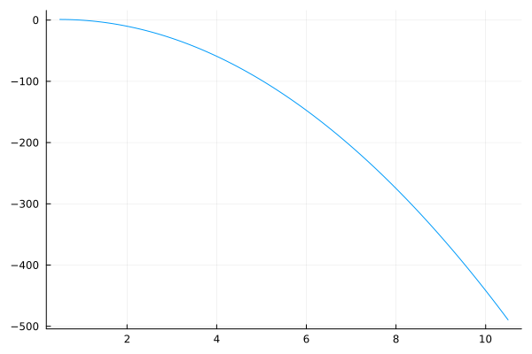
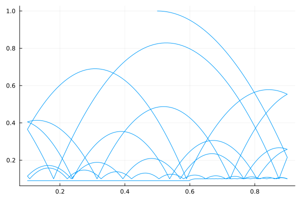

Tutorials
Simulating an FMU
In this example, we will simulate an FMU of a ball bouncing around in a 2D space. The ball has a radius of 0.1 and the 2D space is given by by $[0.0, 1.0] \times [0.0, \infty[$
For this tutorial we will need OrdinaryDiffEq.jl to run the simulation and Plots.jl for visualisation.
using FMIExchange
using OrdinaryDiffEq
using PlotsTo initialise the FMU, we must provide the path to the FMU, its inputs, outputs and states and the simulation start and stop times. If we wish to change the parameters of the FMU we can do this by providing a dictionary of parameter-value pairs.
bbloc = joinpath("deps", "fmu", "BouncingBall2D.fmu") # fmu file location
bbstart = 0.0 # simulation start
bbstop = 10.0 # simulation stop
bbins = String[] # FMU inputs (this FMU has none)
bbouts = String[] # FMU outputs (this FMU has none)
bbstates = ["dx", "dy", "x", "y"] # FMU states
bbparameters = Dict("eps"=>1e-2) # FMU parameters (optional)We then instantiate the FMU as a CachedFMU2 (the name CachedFMU2 is to avoid naming conflicts with related packages). To simulate the FMU, we need to convert it to an AbstractSimModel. Simulation models can be directly simulated with OrdinaryDiffEq.jl. In this example we use the CachedModel simulation model, which contains preallocated caches to make calls to the FMU faster.
fmu = CachedFMU2(bbloc, bbstart, bbstop, bbins, bbouts, bbstates, bbparameters)
model = CachedModel(fmu)Let's simulate the FMU with the default solver.
u0 = [1.0, 0.0, 0.5, 1.0]
p0 = Float64[]
tspan = (bbstart, bbstop)
sol = solve(
ODEProblem(model, u0, tspan, p0),
AutoTsit5(Rosenbrock23(autodiff=false)),
)
plot(sol, idxs=(3,4), legend=false)
That doesn't look right: the ball does not bounce when it hits the ground or the wall. There is a simple reason for this: we forgot to include callbacks to handle the FMU events. FMIExchange.jl can automatically generate the required callbacks. If we include them, the ball behaves as expected.
cbs = get_callbacks(model, bbstart, bbstop)
sol = solve(
ODEProblem(model, u0, tspan, p0),
AutoTsit5(Rosenbrock23(autodiff=false)),
saveat=bbstart:0.01:bbstop, # for a nicer plot
callback=CallbackSet(cbs...)
)
plot(sol, idxs=(3,4), legend=false)
Mixed Native ODEs and FMUs
This example will again simulate the bouncing ball FMU, but this time it adds a second ball that is defined by a native Julia ODE. We will call the balls bb and ss respectively. ss is subject to "screensaver physics": its speed is constant but ss changes direction when it collides with a wall or with bb. To avoid ss flying away, we restrict it to the $[0, 1] \times [0, 1]$ box.
First, define our bouncing ball FMU bb again (see Simulating an FMU).
using FMIExchange
using LinearAlgebra
using OrdinaryDiffEq
using Plots
bbloc = joinpath("deps", "fmu", "BouncingBall2D.fmu") # fmu file location
bbstart = 0.0 # simulation start
bbstop = 10.0 # simulation stop
bbins = String[] # FMU inputs (this FMU has none)
bbouts = String[] # FMU outputs (this FMU has none)
bbstates = ["dx", "dy", "x", "y"] # FMU states
bb_radius = 0.1
bbparameters = Dict("eps"=>1e-2, "r" => bb_radius) # FMU parameters (optional)Now define the physics for ss.
ss_radius = 0.1
ymin = xmin = 0.0
ymax = xmax = 1.0
# The three statements below are a formality
ssinputs = ["dxs", "dys"]
ssoutputs = String[]
ssstates = ["xs", "ys"]
screensaver(du, u, p, t) = du[:] = p[1:2]
screencb = VectorContinuousCallback(
(out, u, t, integrator) -> begin
out[1] = u[1] - (xmin + ss_radius)
out[2] = u[1] - (xmax - ss_radius)
out[3] = u[2] - (ymin + ss_radius)
out[4] = u[2] - (ymax - ss_radius)
end,
(integrator, idx) -> begin
if idx <= 2
integrator.p[1] = -integrator.p[1]
else
integrator.p[2] = -integrator.p[2]
end
end,
4
)Now that we have both models, it's time to combine them. We wrap ss in a ModelSpecification and bb in an FMUSpecification which will allow us to use FMIExchange.jl's simulation composition functionality.
ss_spec = ModelSpecification(ssinputs, ssoutputs, ssstates, screensaver, (args...) -> nothing)
bb_spec = FMUSpecification(bbins, bbouts, bbstates, bbloc, bbparameters)
specs = [ss_spec, bb_spec]The specifications can be converted to simulation models via the create_model function, which will automatically assign the correct address maps as well.
models = create_model(specs, start=bbstart, stop=bbstop)
iomap, umap = address_map(specs)Since there are now two objects in our 2D space, we need to define a callback that handles collision between both.
collision_cb = ContinuousCallback(
(u, t, integrator) -> begin
(u[umap["x"]] - u[umap["xs"]]) ^ 2 + (u[umap["y"]] - u[umap["ys"]]) ^ 2 - (ss_radius + bb_radius) ^ 2
end,
(integrator) -> begin
u, p = integrator.u, integrator.p
# collision line and orthogonal
collision_line = normalize([u[umap["x"]] - u[umap["xs"]], u[umap["y"]] - u[umap["ys"]]])
orth = vec(nullspace(collision_line'))
# velocity vectors of bb and ss
vbb = @view(u[[umap["dx"], umap["dy"]]])
vss = @view(p[[iomap["dxs"], iomap["dys"]]])
# New vectors using dot(a, b) to project two vectors onto each other
vbb[:] = abs(dot(collision_line, vbb)) * collision_line + dot(orth, vbb) * orth
vss[:] = - abs(dot(collision_line, vss)) * collision_line + dot(orth, vss) * orth
u_modified!(integrator, true)
end
)Collision Physics
To simulate the collision between ss and bb, we decompose the velocity vector of each into components that are orthogonal and tangential to the collision line (the line between the centers of ss and bb). The tangential component of bb's velocity vector will point away from ss after bouncing and vice versa. The orthogonal velocity component remains the same for both. For simplicity we assume the magnitude of each object's velocity remains constant.
Finally we define initial conditions and simulate the system. One small change compared to the first example, is that we now need to call the dynamics function to obtain our ODEfunction. This is because models is not an AbstractSimModel, but rather a Vector{AbstractSimModel}. dynamics(models) automatically generates an OrdinaryDiffEq.jl-compatible function that combines the ODEs of both models.
u0 = zeros(length(keys(umap)))
u0[umap["x"]] = 0.5
u0[umap["dx"]] = 0.5
u0[umap["y"]] = 1.0
u0[umap["dy"]] = 0.0
u0[umap["xs"]] = 0.2
u0[umap["ys"]] = 0.8
p0 = Float64[0.2, 0.2]
tspan = (bbstart, bbstop)
sol = solve(
ODEProblem(dynamics(models), u0, tspan, p0),
AutoTsit5(Rosenbrock23(autodiff=false)),
callback=CallbackSet(
reduce(vcat, get_callbacks.(models, bbstart, bbstop))...,
screencb,
collision_cb
),
dtmax=0.01 # The collision callback may give errors when using large steps
)We can plot the solution as a nice animation.
# this function was copied from
# https://discourse.julialang.org/t/plot-a-circle-with-a-given-radius-with-plots-jl/23295
function circleShape(h, k, r)
θ = LinRange(0, 2π, 500)
h .+ r * sin.(θ), k .+ r * cos.(θ)
end
anim = @animate for t = sort(bbstart:0.1:bbstop)
plot(sol, idxs=[(umap["x"], umap["y"]), (umap["xs"], umap["ys"])],
tspan=(bbstart, t), xlim=(xmin, xmax), ylim=(ymin, ymax),
aspect_ratio=:equal, label=["bb" "ss"], legend=:topleft
)
plot!(circleShape(sol(t)[umap["x"]], sol(t)[umap["y"]], bb_radius),
fill=(0,), color=palette(:default)[1], label=nothing)
plot!(circleShape(sol(t)[umap["xs"]], sol(t)[umap["ys"]], ss_radius),
fill=(0,), color=palette(:default)[2], label=nothing)
end